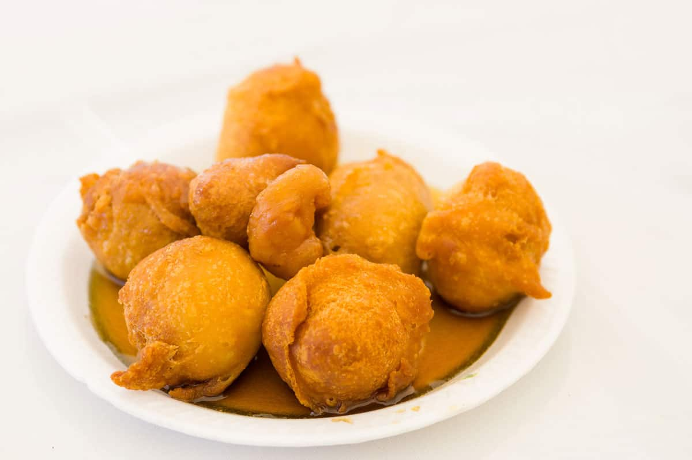

bunuelos

a plate of freshly made buñuelos, served with a syrup from pure sugar cane
Buñuelos are a lightly fried egg and flour dough with a hint of lemon zest. After frying, they're dusted with
confectioners' sugar to create an irresistible, bite-sized dessert. They can also be filled with pastry cream,
egg
custard, or your favorite marmalade. Making these tasty treats is actually quite easy, so you can explore all
these
options and find out which you like best
Ingredients
- 1 1/4 cups water
- 2 tablespoons unsalted butter
- 2 tablespoons granulated sugar
- 1 tablespoon lemon zest, from lemon
- 1 pinch of salt
- 4 1/2 ounces unbleached white flour
- 4 large eggs
- 2 to 3 cups vegetable oil (e.g., canola, corn), for frying
- 1/4 cup confectioners' sugar, for dusting
- egg custard and or any other filling if desired
Instructions
- gahter all ingrediants (Duh)
- In a small saucepan, combine water, butter, granulated sugar, lemon zest, and pinch of salt. Bring to a
boil.
- As soon as the water boils, add the flour and baking powder all at once and begin stirring with a wooden
spoon. Stir
constantly until the dough begins to come away from the sides of the pan.
- Remove from the heat and allow to cool down for a few minutes.
- When the dough is no longer hot, but still warm, stir in the eggs, one by one. Use a hand mixer if
necessary
to ensure
that the dough is smooth.
- Set aside for 1 1/2 to 2 hours.
- In a large, heavy-bottomed frying pan, pour vegetable oil to a depth of about 1 1/2 inches. Heat on
medium-high.
- When the oil is just hot enough to fry, begin dropping spoonfuls of dough into the oil.
- Turn over when the bottom is golden. The buñuelos should turn a golden color and begin to float when
cooked.
- Remove them from the pan one at a time using a slotted spoon or spatula. Drain on a paper towel.
- Sprinkle with confectioners' sugar and serve immediately.
Enjoy your buñuelos! and remember, you can fill them with custard and or anything else if desired